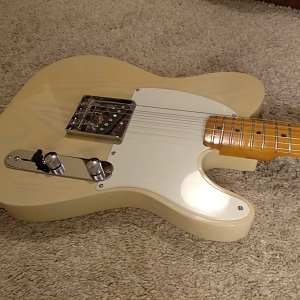
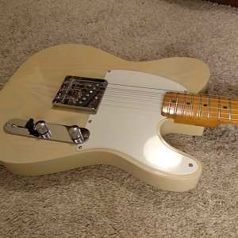

T-Type
Esplora tutti i particolari della più classica tra le chitarre elettriche.
 Vai alla pagina
 Handmade Guitars
Handmade Guitars
Lo sappiamo entrambi. I musicisti sanno essere molto schizzinosi quando si parla dei loro strumenti. Farsi realizzare uno strumento su misura è il modo migliore per ottenere quella sensazione di puro piacere quando si suona.
Esplora tutti i particolari della più classica tra le chitarre elettriche.
 Vai alla pagina